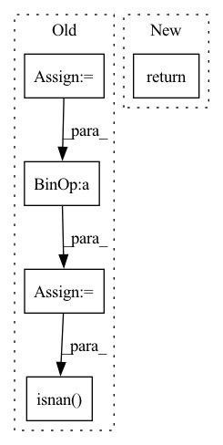

Pattern ID :41878

Before Change
def l2_normalize(d):
norm = torch.norm(d, p=2, dim=1, keepdim=True)
norm = d / norm
norm[torch.isnan(norm)] = 0.
return norm
After Change
def l2_normalize(d):
return F.normalize(d, p=2, dim=1)
def get_normalized_vector(d):
In pattern: SUPERPATTERN
Frequency: 3
Non-data size: 5
Instances
Fragment ID: 117373146
Project Name: edisonleeeee/graphgallery
Commit Name: 68c0e08ed92b45916e17c0f3b6b515e39ad8bef5
Time: 2021-05-29
Author: cnljt@outlook.com
File Name: graphgallery/nn/models/pytorch/BVAT/utils.py
M Class Name: AnonimousClass
N Class Name: AnonimousClass
M Method Name: l2_normalize(1)
N Method Name: l2_normalize(1)
M Parent Class:
N Parent Class:
M File Name: graphgallery/nn/models/pytorch/BVAT/utils.py
N File Name: graphgallery/nn/models/pytorch/BVAT/utils.py
M Start Line: 6
M End Line: 9
N Start Line: 6
N End Line: 6
'>
Before Change
rmse_cost = loss[0](hypothesis, Y_train)
// neg_cost = 0
""" STFT Loss """
stft_cost = loss[1](hypothesis, Y_train)
"""DBP Loss"""
// d_cost = loss[0](pred_d, d.view(-1, 1))
"""SBP Loss"""
// s_cost = loss[0](pred_s, s.view(-1, 1))
"""FFT Loss"""
// fft_cost = loss_fft(hypothesis, Y_train)
"""Total Loss"""
cost = rmse_cost + stft_cost // + d_cost + s_cost
// cost = fft_cost
cost.backward()
optimizer.step()
if not np.isnan(cost.__float__()):
train_cost_sum += cost.__float__()
train_neg_cost_sum += rmse_cost.__float__()
train_stft_cost_sum += stft_cost.__float__()
After Change
// "Train Negative Pearson Loss": neg_cost, // },step=epoch)
// "Train Systolic Loss": s_cost,
// "Train Diastolic Loss": d_cost}, step=epoch)
return total_cost.__float__()
'>
Fragment ID: 117373147
Project Name: tvs-ai/pytorch_rppgs
Commit Name: 79fa5ea2fc22ff76197fc5272382574b54608880
Time: 2023-01-02
Author: forownsake@gmail.com
File Name: vid2bp/train.py
M Class Name: AnonimousClass
N Class Name: AnonimousClass
M Method Name: train(7)
N Method Name: train(7)
M Parent Class:
N Parent Class:
M File Name: vid2bp/train.py
N File Name: vid2bp/train.py
M Start Line: 10
M End Line: 67
N Start Line: 10
N End Line: 40
'>
Before Change
def l2_normalize(d):
norm = torch.norm(d, p=2, dim=1, keepdim=True)
norm = d / norm
norm[torch.isnan(norm)] = 0.
return norm
After Change
def l2_normalize(d):
return F.normalize(d, p=2, dim=1)
'>
Fragment ID: 117373153
Project Name: edisonleeeee/graphgallery
Commit Name: 68c0e08ed92b45916e17c0f3b6b515e39ad8bef5
Time: 2021-05-29
Author: cnljt@outlook.com
File Name: graphgallery/nn/models/pytorch/GraphAT/utils.py
M Class Name: AnonimousClass
N Class Name: AnonimousClass
M Method Name: l2_normalize(1)
N Method Name: l2_normalize(1)
M Parent Class:
N Parent Class:
M File Name: graphgallery/nn/models/pytorch/GraphAT/utils.py
N File Name: graphgallery/nn/models/pytorch/GraphAT/utils.py
M Start Line: 30
M End Line: 33
N Start Line: 29
N End Line: 29